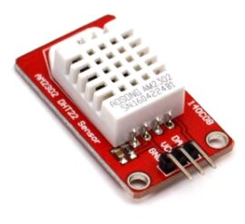
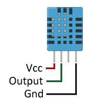

DHT22

Créditos: CC-BY-NC-SA Luis Llamas
Es un sensor que mide de forma sencilla tanto la temperatura como la humedad. Este sensor aparece en el curso de Aularagón Arduino con código
Su conexión es sencilla :

Créditos: CC-BY-NC-SA Luis Llamas
Para saber más recomendamos la página de Luis Llamas

Rover Arduino por CONSEJERÍA DE EDUCACIÓN Y FORMACION PROFESIONAL GOBIERNO DE CANTABRIA bajo licencia Creative Commons Reconocimiento-NoComercial-CompartirIgual 4.0 Internacional License.